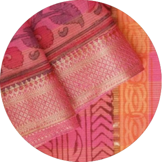
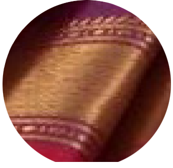
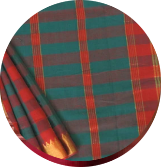
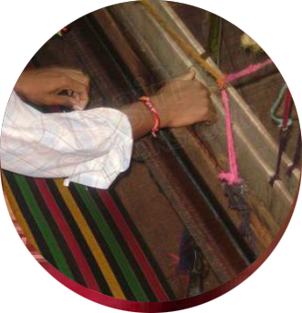
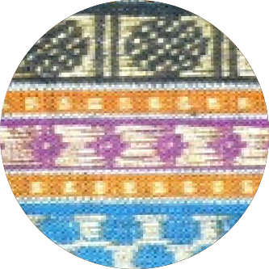

Mangalagiri Sarees and Fabrics are produced by performing Handicraft weaving in Mangalagiri, a town in Guntur District of Andhra Pradesh. It is one of many traditional Indian Handlooms.The Mangalagiri fabric is produced by weaving with the help of pitlooms from combed yarn by warp and woof interlacing. The fabric then undergoes the process of dying. Some of the most commonly found patterns and motifs include the nizam pattern and floral motifs, we also entertain special orders with custom designs.Now after the pandemic in the new normal as the global market gravitates towards a more sustainable alternative to fast fashion and more designers on a global scale look to handlooms. We at Mangalagiri textiles endevour to provide a very good ethical and green alternative to machine made or synthetic fabrics and be a part of the slow fashion movement globally apart from our existing endevours to keep the cultural coloufulness alive in the best quality.
ABOUT US
READ MORE
SPECIALITY
Thread Density
counts or thread density per square inch range from 40 (coarse) to 120 (superfine), sometimes more.
READ MORE
Zari
The use of zari was once limited to borders. Today silver and golden coloured zari is a major attraction covering borders, the pallu and the body
READ MORE
Patterns & Motifs
The speciality of these cotton saris are known for featuring micro checks or stripes on the field with a dense zari border
READ MORE
Pitlooms
Material woven only on pit-loom and there are No gaps on the weave in the edge of the material
READ MORE
Nizam Border
The Nizam border, unique to the Mangalagiri variety of handlooms, has tiny gopurams across the borders
READ MORE
CONTACT US
Email : mangalagiri@gmail.com
Call us : 364759866
Address : shop no 233, Mangalagiri sarees, Mangalagiri, guntur, Telangana

We're here and happy to help!